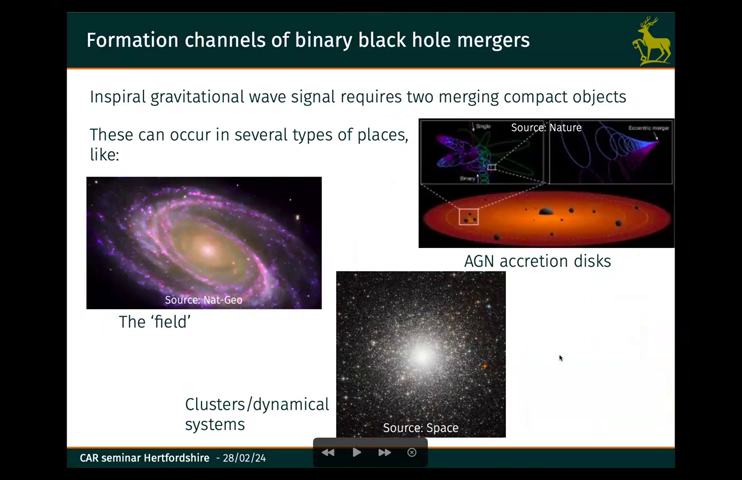
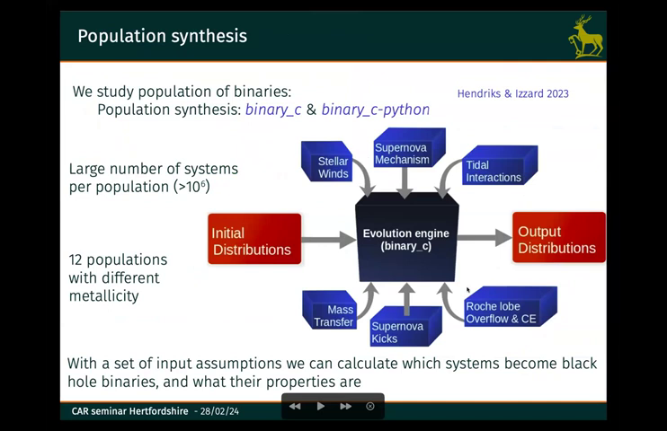
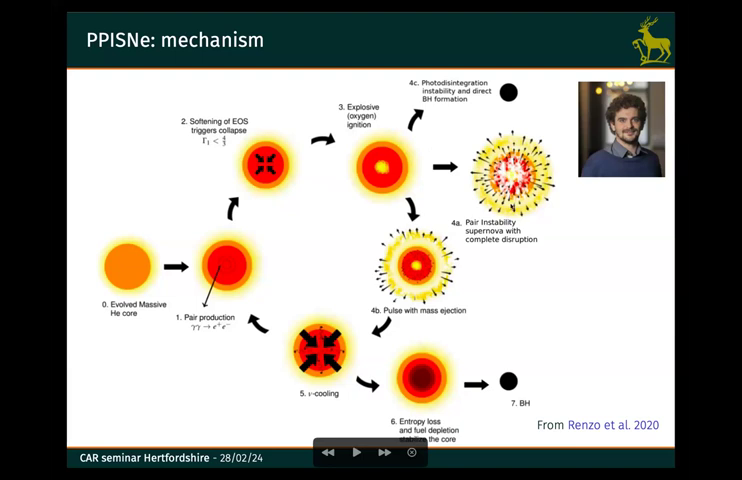
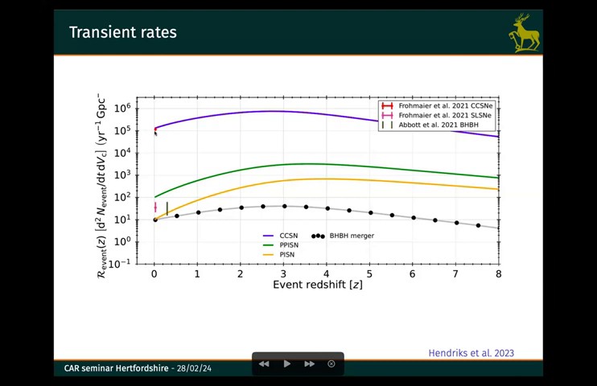
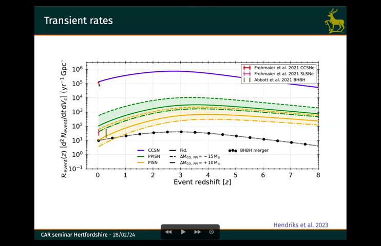
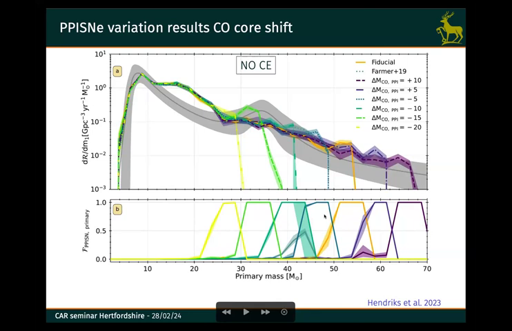

Summary:
Dr. David Hendriks of the University of Surrey delivered a lecture on the role of pulsational pair-instability supernovae in electromagnetic and gravitational-wave transients. The lecture delved into the statistical properties of black hole mergers, particularly focusing on the unexpected mass distribution of these objects, and explored the potential for pair-instability supernovae as a significant contributor to the observed population.
Firstly, the speaker presented a compelling argument for the emergence of a new era in gravitational-wave astronomy. With the increasing number of detections since 2015, gravitational-wave observatories have acquired sufficient data for statistical analysis. This allows for the construction of distributions, like the distribution of black hole masses, which offer invaluable insights into the processes that generate these compact objects.
The lecture then highlighted a peculiar feature of the observed black hole mass distribution – a bump centered around 35 solar masses. Hendriks proposed that pulsational pair-instability supernovae, a type of stellar explosion characterized by intense pulsations and pair production, could account for this bump. He explained that these supernovae occur when a massive star reaches a critical stage in its evolution, leading to a catastrophic ejection of its outer layers and leaving behind a black hole. The unique physics of pair-instability supernovae, which involve a delicate balance between energy production and radiation pressure, results in the creation of black holes with masses clustered around 35 solar masses.
Finally, the lecture discussed the broader implications of this research. Hendriks argued that, if pulsational pair-instability supernovae are indeed a major contributor to the black hole population, it could have significant implications for our understanding of stellar evolution, galaxy formation, and the evolution of binary systems. Further investigations into the role of pair-instability supernovae, he concluded, are crucial to unravel the mysteries surrounding the origin and evolution of black hole mergers and their implications for the cosmic landscape.

Slide 4
The slide is titled 'Formation channels of binary black hole mergers'. It shows three images: a galaxy, an accretion disk, and a globular cluster. The speaker discusses how binary black hole mergers can be formed through a variety of channels. This includes the 'field' (isolated binaries), AGN accretion disks, and dense star clusters, each with its own unique dynamics and processes that influence the final merger product.

Slide 6
The slide shows a flowchart of a population synthesis model for binary stars that begins with initial distributions of binary parameters, evolves those systems using a binary_c engine that includes mass transfer, supernova kicks, and tidal interactions, and then provides final output distributions. The speaker explains that this model allows them to study the evolution of a large number of binary systems (greater than 10^9) and provides details about the use of the binary_c engine, including 12 different populations with varying metallicity, Roche lobe overflow and common envelope evolution, and supernova kicks.

Slide 8
The slide shows a flowchart detailing the mechanism of a pulsational pair-instability supernova (PPISNe). Starting with an evolved core of helium, the star experiences a series of steps: 1) pair production, 2) softening of the equation of state triggers core collapse, 3) explosive oxygen ignition, 4) pair-instability supernova with complete disruption, 5) cooling, 6) entropy loss and fuel depletion in the core, and 7) black hole formation. The speaker emphasizes the importance of this mechanism in the evolution of massive stars, especially in the context of gravitational waves.

Slide 15
The slide shows a plot of event rate per Gpc^3 as a function of redshift for CCSNe, SLSNe, and PISNe. The speaker discusses how the detection of PISNe, which are expected to be less common than other transients, can help to constrain the properties of the pre-supernova star. The rate of PISNe is uncertain, but it is potentially detectable with the next generation of astronomical telescopes, particularly those capable of observing gravitational waves.

Slide 16
The slide shows a plot of event rate per Gpc^3 per year against redshift, with curves for CCSNe, SLSNe, PISNe, PPISNe, and binary black holes mergers. The speaker discusses how the rate of CCSNe at redshift 0 is consistent with observations, while the rates of SLSNe, PISNe, and PPISNe are all higher than observations. The speaker also notes that it is not necessarily the case that all PISNe are SLSNe.

Slide 20
The slide shows the results of the variation of PPISNe rates, with different assumptions about the core shift, common-envelope evolution, and progenitor mass. The speaker discusses how different assumptions lead to different predictions for the rate of PPISNe, emphasizing that the fiducial model does not match observations. The speaker then briefly discusses the challenges in modelling the evolution of the PPISN progenitors, highlighting the need for a better understanding of the core shift, common-envelope evolution, and mass loss.